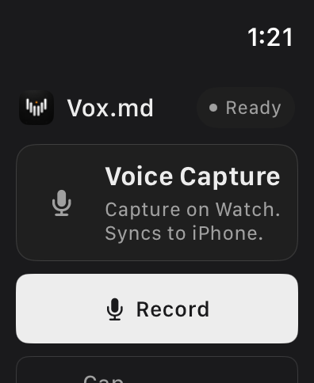

Vox.md records audio locally on Apple Watch, transfers it to your paired iPhone, and uses the selected Capture Preset to transcribe and deliver it to an Obsidian vault folder. The Watch records; the iPhone transcribes and writes the note. An Obsidian plugin is not required.
Prepare the iPhone destination first, then make a short Watch recording and confirm the note arrived before relying on the workflow away from your phone.
Try 15 transcription minutes and 10 successful Capture deliveries free. Unlimited use is a one-time lifetime purchase; the App Store shows your regional price.
1. Prepare your iPhone and vault
- Install Vox.md on a paired iPhone running iOS 17.6 or later and on Apple Watch running watchOS 10 or later.
- Open Vox.md on iPhone, grant microphone permission, and prepare an available local speech backend. Backend and language support vary by phone and OS; initial model or language preparation can require a download.
- Enable a Capture Preset and connect its destination to a vault folder exposed through Files. Start with a New Note target to make the first result easy to find.
- Make one capture on iPhone and check the resulting file in Obsidian. A working iPhone route separates folder and model setup problems from Watch transfer problems.
The iPhone voice notes guide walks through those steps. Vox.md writes to a selected folder; it does not connect directly to the Obsidian Sync service. If the vault cannot be selected through Files, that destination is not ready for this workflow.
2. Choose a preset and record on Watch
- Open Vox.md on iPhone so your enabled Capture Presets can sync to Watch.
- Open Vox.md on Watch. Use the Capture Preset card to choose the intended preset, then confirm the displayed selection before recording.
- Tap Record and speak a short thought. Use Pause and Resume when needed; pausing keeps one recording.
- Tap Stop when finished. Watch queues the recording for transfer. Cancel discards a recording, so use Stop when you want to keep it.
If iPhone is unavailable while you request a different preset, the selection can remain pending and the last confirmed preset stays active. Select and confirm your route while the devices can communicate before heading out.

For a quicker entry point, add the Record voice note complication to a compatible watch face. Its available presentation depends on the face and complication slot. See the complication reference.
3. Check the Markdown delivery
Your iPhone receives the audio, transcribes it on device, and saves through the selected preset. Watch can show queued, transcribing, saving, sent, or attention states as that progresses. A queued recording is not confirmation that the Markdown has reached your vault.
For a first check, open Vox.md on iPhone and inspect Watch Recordings. After successful delivery, open the target file in Obsidian. A spoken thought such as “Look up the trail map before Saturday” could become this plain note body:
Look up the trail map before Saturday.This is illustrative output. Recognition, punctuation, filename, metadata, and processing depend on your recording and preset. Review important transcripts.
Once delivery works, use a daily Rolling Note or an Existing Note instead of creating a new file each time. Follow the daily-note routing guide to keep journal entries or tasks beneath a chosen heading.
What happens away from your phone?
Watch can keep a recording locally while waiting to transfer it. Transcription and Markdown delivery still need the paired iPhone, a prepared speech backend, and access to the destination folder. This is delayed delivery, not independent transcription on Watch.
Recordings remain on Watch until iPhone confirms delivery or discard. iOS can delay background processing. Force-quitting Vox.md on iPhone prevents background delivery until you open the app again. If a note is time-sensitive, check the delivered file rather than assuming transfer has completed.
Local transcription also does not determine how your vault syncs. A cloud-backed destination may need connectivity for file access or later synchronization under that provider’s terms.
Fix queued or failed recordings
The recording stays queued
Open Vox.md on iPhone, open Watch Recordings, and use Refresh or Retry as offered. Check that the preset is enabled, the speech backend is ready, and the folder permission still works. Keep the app installed and available for handoff.
The selected destination is no longer available
Use the iPhone queue to choose a valid preset or retry after restoring folder access. You can also capture without a transcript when offered. Discard removes retained audio and queued delivery, so use it only when you no longer need the recording.
I only want the audio file
Configure a preset with Recording Only output and choose its recording folder on iPhone. That copies M4A audio without transcription; it does not create the Markdown transcript described here or consume transcription minutes. See Recording Only setup.
Capture on your wrist.
Find the thought in your notes.
Set up the iPhone destination once, confirm your Watch preset, and try a short recording.
Choose between iPhone capture methods, or compare native Obsidian with Vox.md.